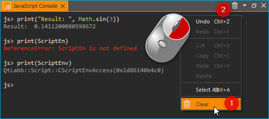

6. Using JavaScript
6.1. JavaScript Support in CETONI Elements
Attention
The CETONI Elements Script System Add-on allows you to control and automate processes using JavaScript language. Check the created scripts/programs as well as parameter entries before you execute them for the first time! CETONI assumes no liability for direct and/or indirect damage to your system or external hardware and software components caused by the scripts/programs you have created or by the use of parameters that are not suitable or unfavorable for your specific application.
The CETONI Elements software comes with an integrated JavaScript Engine. This engine provides an environment for evaluating JavaScript code. This allows you to execute JavaScript code in CETONI Elements scripts via a corresponding script function and provides an easy way to include the JavaScript scripting language in your CETONI Elements scripts.
This gives you an additional way to implement logic in the Script System and may simplify the implementation of complex calculations.
6.2. JavaScript Console
6.2.1. Overview of JavaScript Console
The script system provides a JavaScript console that allows you to interactively enter and execute JavaScript code similar to the Python console. You can show the JavaScript console from the main menu ():

In the JavaScript console, you can try out commands, test access to objects, and it helps you debug problems. If function calls work in the console, you can use them in your script.
The context menu of the JavaScript console contains the usual commands for text editing:
You have three options to delete the content of the JavaScript console:
select ❶ in the context menu
click the trash can icon ❷ in the title bar
enter the
clear()command in the console
Attention
Risk of malfunction or data loss ! Do not use the JavaScript Console in a running experiment, process or during normal operation or productive use. Incorrect input or access to resources can possibly lead to a crash of the software.
6.2.2. Code completion
The JavaScript console supports you during typing with a simple code completion.

In the example above the code completion shows a selection of devices starting
with Nemes.
6.2.3. Error messages
Errors that occur when executing code in the JavaScript console are displayed to you as red text:

6.2.4. Getting Help
You can use the global help() command, to find out more about the available
objects and functions. If you use the help() command without any
parameters, you will get a list of available functions and objects:

If you pass the global object via help(this), then you will get
a list of all built-in objects in the global scope:

If you pass an object or function name as parameter to the help function,
like help(ScriptEnv), you will get detailed information about the given
object such as type ❶, properties ❷, methods ❸ and
signals ❹:

Tip
Use the help(object) function to get an overview of the methods and
properties of a given object.
6.3. Accessing application objects
The ScriptEnv object is the central object for accessing
available devices and application objects. Use help(ScriptEnv) command
to get a list of available methods and properties of this object.
6.3.1. Using device objects
You can access device objects using the ScriptEnv.getDevice()
function. To get an overview of available device names you can call the
ScriptEnv.listDevices() function.

The code completion helps you to enter a device name by
showing you a list of matching names (see figure above). If you call the
getDevice() function without an assignment to a variable, then you can
see in the console if the call was successful:
js> ScriptEnv.getDevice("Nemesys_S_1")
QtLabb::CNemesys4Pump(0x1e2136485a0, "Nemesys_S_1")
To access a device, assign the result of the call to getDevice() to a
variable. In the following example, we assign the device object for the
first Nemesys S pump to the variable pump:
js> pump = ScriptEnv.getDevice("Nemesys_S_1")
QtLabb::CNemesys4Pump(0x1e2136485a0, "Nemesys_S_1")
Now you can use the help(pump) function to get an
overview of the available methods and functions of the pump object.
Tip
Use the help(object) function to get an overview of the methods and
properties of device objects.
Important
For many devices, accessing device properties and methods is only possible if the application is connected to the devices.
Attention
Risk of malfunction / data loss ! Via device functions you may have access to functions that are not available in the graphical user interface. Always test functions outside running processes and not during productive use. Incorrect input or access to resources, methods or properties can lead to malfunctions or a crash of the software.
When you are connected to the device, you can now access the device functionality via the device object functions. For example, you can trigger a refill process for the pump:
js> pump.refillSyringe()
or stop the pumping operation:
js> pump.stopPumping()
The following code shows how to get the device object for the Nemesys S pump via
the ScriptEnv object, and then start an emptying process of the syringe:
js> pump = ScriptEnv.getDevice("Nemesys_S_1")
QtLabb::CNemesys4Pump(0x1e2136485a0, "Nemesys_S_1")
js> pump.emptySyringe()
6.3.2. Using application objects
Similar to device objects, you can also access application objects that
are no devices. Use the two functions ScriptEnv.getObject() and
ScriptEnv.listObjects() for this
The following code shows how to get the application object of the graphical
logger via the ScriptEnv object and then start logging:
js> plot = ScriptEnv.getObject("ProcessDataGraph")
QtLabb::CQCustomPlotDataLogger(0x1e2112dc280, "ProcessDataGraph")
js> plot.startLogging()
Tip
Use the help(object) function to get an overview of the methods and
properties of application objects.
Attention
Risk of malfunction / data loss ! The functions of the application objects may give you access to functions that are not available in the graphical user interface. Always test functions outside running processes and not during productive use. Incorrect input or access to resources, methods or properties can lead to malfunctions or a crash of the software.
6.4. Standard built-in objects
The JavaScript engine has a number of standard buil-in objects in the global
scope. One of these objects is the global object that can be accessed using the
this operator. To list all built-in objects, you just need to call the
help function with the global object like this: help(this).
If you would like to see the properties and functions of a specific built-in
object, such as Math, you just need to call help passing this object:
help(Math).
For a detailed list of built-in objects supported by the embedded JavaScript engine, please refer to the Qt documentation:
https://doc.qt.io/qt-5/qtqml-javascript-functionlist.html
For a detailed documentation of the build-in objects, please refer to the JavaScript reference documentation:
https://developer.mozilla.org/en-US/docs/Web/JavaScript/Reference/Global_Objects
6.5. JavaScript Script Function
6.5.1. JavaScript Script Function Overview
The Execute JavaScript Code script function is available in the
Core Functions category of the Script Pool:

This function allows you to execute JavaScript code in the script system of the application. When you insert the function into your script, you will see the initial JavaScript code in the configuration area.
// Implement your script logic in this function
// Avoid blocking function calls
function main() {
return ScriptEnv.FINISH;
}
When the script is executed, it is loaded by the JavaScript engine and then
the main() function is called. I.e. this function is the main
function of the script and the logic should be implemented there.
Tip
All options you have in the JavaScript Console to access device objects and application objects are also available in the script function.
Each script function uses its own JavaScript engine instance. This enables the use of JavaScript functions in parallel sequences.
6.5.2. JavaScript Editor
The JavaScript Script function has a JavaScript code editor to assist you in writing JavaScript code.

The editor has the following features
Syntax highlighting for JavaScript code ❶
a simple code completion
Code Folding ❷
Line numbers ❸
Undo / Redo functionality ❹
Some functions of the editor are available via the context menu, other functions are available via keyboard shortcuts. Here are some of the functions:
Action |
Keyboard Shortcut |
|---|---|
Increase font size |
Ctrl + + |
Decrease font size |
Ctrl + - |
Reset font size to default |
Ctrl + 0 |
Indent selected code block |
Tab |
Unindent selected code block |
Shift + Tab |
Undo |
Ctrl + Z or context menu |
Redo |
Ctrl + Y or context menu |
Important
Editing the JavaScript source code is only possible when the script is not running. Once the script has been started, editing of the source code is disabled. In case of an error you have to terminate the script via the Terminate Script button before you can edit the JavaScript code.
6.5.3. Implementation of the function logic in main()
When implementing the script in main() you should be careful
not to use blocking functions or blocking waits. Normally the JavaScript engine
runs the JavaScript code in the main UI thread and using blocking function
calls may block any UI updates and the main event loop.
Important
Do not use blocking function calls to avoid blocking the main UI thread.
If you want to implement complex logic or state machines in JavaScript, then you should consider using concurrent execution in a worker thread. To activate concurrent execution, you can turn on the toggle switch Concurrent Execution. Read more about this feature in section Concurrent Execution.

Unlike with the Set Variable or Create Variable functions, it is not
allowed here to use variable identifiers (such as $Flow) or device properties
(such as $$Nemesys_S_1.ActualFlow) directly in the JavaScript source code.
That means, the following code is wrong and invalid code:
function calculateFlow()
{
// Wrong - $Flow and $$Nemesys_S_1.ActualFlow are not defined
return $Flow + $$Nemesys_S_1.ActualFlow
}
To access variables the functions ScriptEnv.setVar() and ScriptEnv.getVar()
must be used. Access to device functions is possible via ScriptEnv.getDevice().
The right way, to implement the function above, is this one:
function calculateFlow()
{
Flow = ScriptEnv.getVar("$Flow");
pump = ScriptEnv.getDevice("Nemesys_S_1");
return Flow + pump.ActualFlow;
}
Attention
It is not allowed to use variable identifiers such as $Flow or
device properties such as $$Nemesys_S_1.ActualFlow directly in the
JavaScript source code.
6.5.4. Global named values
The ScriptEnv object has the setNamedValue(). function You can use this
function to register a specific value with a defined name globally
for the current script engine instance. You can then later use the
namedValue() function to simply access the registered named value.
This is handy, for example, if you want to access certain objects,
such as settings files or global settings, from different JavaScript
functions. You can register the value in a JavaScript function and
then access it later from other JavaScript functions.
Tip
For more details, see the API documentation of the two functions
ScriptEnv.setNamedValue()
and ScriptEnv.namedValue().
6.5.5. Importing JavaScript modules
The JavaScript Engine allows you to import your own JavaScript modules from the
current project directory. If you use your own modules that you want to share
or deliver with your project, you can save them in the Scripts/JavaScript
subfolder of your current project. For example, if you are working in the
JavaScript_Tutorial project, the absolute path to this directory would be:
C:/Users/Public/Documents/QmixElements/Projects/JavaScript_Tutorial/Scripts/JavaScript
You can then import modules contained in this folder using the import function
of the ScriptEnv object. In the following example, a JavaScript module is
created in the Scripts/JavaScript folder in the file test.js
with the following content:
// module "test.js"
function cube(x) {
return x * x * x;
}
const foo = Math.PI + Math.SQRT2;
const graph = {
options: {
color: "white",
thickness: "2px",
},
draw() {
console.log("From graph draw function");
},
};
class Person {
constructor(firstName, lastName) {
this.firstName = firstName;
this.lastName = lastName;
}
getFullName() {
return `${this.firstName} ${this.lastName}`;
}
}
export { cube, foo, graph, Person };
In the JavaScript script function, the module is now imported and used as
MyModule:
function main() {
ScriptEnv.import("test.js", "MyModule");
print(MyModule.foo);
print(MyModule.cube(3));
print(MyModule.graph.options.color);
const person1 = new MyModule.Person("John", "Doe");
console.log("Person: ", person1.getFullName());
return ScriptEnv.ScriptFinish;
}
The JavaScript console should contain the following output after execution of the script function:
js>
4.555806215962888
27
white
Person: John Doe
6.5.6. Script execution errors
If errors occur during the execution of a script, you will see them in the Event Log. If you hover over the error message in the event log, you will see a hint window with details:

In the error message you will also get the information in which line of the script an error occurred. This will help you to find and fix the error in the script editor.
Important
Editing the JavaScript source code is only possible when the script is not running. Once the script has been started, editing of the source code is disabled. In case of an error you have to terminate the script via the Terminate Script button before you can edit the JavaScript source code.
6.6. Debugging JavaScript Code
When you develop a script function with JavaScript, there are many ways to debug possible issues that you may face. The sections below describe, how to use the JavaScript console API to debug your JavaScript code.
Feature |
Description |
|---|---|
Use For example: function f(a, b) {
print("a is ", a, "b is ", b);
}
|
|
Log |
Use For example: function f(a, b) {
console.log("a is ", a, "b is ", b);
}
|
Assert |
For example: function f() {
var x = 12
console.assert(x == 12, "This will pass");
console.assert(x > 12, "This will fail");
}
|
Timer |
For example: function f() {
console.time("wholeFunction");
console.time("firstPart");
// first part
console.timeEnd("firstPart");
// second part
console.timeEnd("wholeFunction");
}
|
Trace |
|
Count |
For example: function f() {
console.count("f called");
}
|
Exception |
|
In addition, you have the option of using the ScriptEnv.log() function
in the software to output messages in the event log. The advantage of this
function is that you can additionally specify a log level and a Source as
parameters, which is then output in the event log.
In the following example, four log messages with different levels are output in the JavaScript function:
function main() {
ScriptEnv.log(ScriptEnv.LogInfo, "Test Info Message", "JavaScript Function");
ScriptEnv.log(ScriptEnv.LogWarning, "Test Warning Message", "JavaScript Function");
ScriptEnv.log(ScriptEnv.LogError, "Test Error Message", "JavaScript Function");
ScriptEnv.log(ScriptEnv.LogDebug, "Test Debug Message", "JavaScript Function");
return ScriptEnv.ScriptFinish;
}
This code leads to the following log outputs in the event log:

Important
Messages with the log level ScriptEnv.LogDebug are only output when
debug mode is active.
6.7. Concurrent Execution
Normally the JavaScript code is executed in the main UI thread. If you would like to implement long running JavaScript code with blocking function calls or longer delays, you should consider concurrent execution in a dedicated worker thread, to avoid blocking the main UI thread. To activate concurrent execution, you can turn on the toggle switch Concurrent Execution.
If the JavaScript code runs concurrently, then it is possible to interrupt
the JavaScript script function when the script execution is stopped. The
disadvantage of the concurrent execution is, that it is not safe to access
methods and properties of UI objects that you have obtained via
ScriptEnv.getObject().
Attention
It is not safe to use properties and methods of UI application objects if the JavaScript code is executed concurrently. In this case, accessing UI objects may crash the application.
To call UI object methods, you need to use the ScriptEnv.invoke()
function. This ensures, that the invoked method is called in the main UI
thread. The following example shows how to invoke a function of the graphical
logger and of a pump using ScriptEnv.invoke()
function main()
{
pump = ScriptEnv.getDevice("Nemesys_S_1");
ScriptEnv.invoke(pump.generateFlow, [-0.01]);
graph = ScriptEnv.getObject("ProcessDataGraph");
ScriptEnv.invoke(graph.startLogging, []);
}
The following table shows the advantages / disadvantages of the two execution modes to help you to decide which one to use:
Execution in UI thread |
Concurrent Execution |
|
|---|---|---|
UI object access |
yes |
only via |
Blocking function calls |
no - blocks UI thread |
yes |
Interruptible |
no |
yes |
Suitable for |
short scripts or calculations |
complex scripts with blocking function calls and delays |
6.8. Accessing signals and slots in scripts
The embedded JavaScript engine offers the capability to use signals and slots. Signals are emitted by an object when its internal state has changed in some way. A slot is called when a signal connected to it is emitted. Slots are normal functions and can be called normally; their only special feature is that signals can be connected to them. If you connect to a signal, the receiver can be a regular slot of another object or a JavaScript function. The most common case is when you connect the signal to an anonymous function:
pump.dosageFinished.connect(function() {
console.log('dosage finished!');
});
If you need to undo the connection, you will need to store the function in a variable:
function dosageFinished() {
console.log('dosage finished!')
}
pump.dosageFinished.connect(dosageFinished);
//...
pump.dosageFinished.disconnect(dosageFinished);
You can also connect the signal to a signal or slot of another exposed object.
In the following example we connect the dosageFinished signal of pump2
to the stopPumping slot of pump1. This will automatically stop pump1
if pump2 stops:
pump1 = ScriptEnv.getDevice("peRISYS_S_1");
pump2 = ScriptEnv.getDevice("peRISYS_S_2");
pump2.dosageFinished.connect(pump1.stopPumping)
The following example is a little bit more complex and shows, how to use concurrent execution together with a signal connection.
1function onDosageFinished() {
2 print("onDosageFinished");
3 ScriptEnv.leave();
4}
5
6// Implement your script logic in this function
7// Avoid blocking function calls
8function main() {
9 pump = ScriptEnv.getDevice("Nemesys_S_1");
10 if (typeof ScriptEnv.Initialized == "undefined") {
11 ScriptEnv.Initialized = true;
12 print("Connecting signal")
13 pump.dosageFinished.connect(onDosageFinished);
14 }
15 pump.aspirate(0.01, 0.01);
16 return ScriptEnv.KEEP_RUNNING;
17}
The code in line 10 to 14 connects the dosageFinished signal of the pump
to the JavaScript function onDosageFinished.
if (typeof ScriptEnv.Initialized == "undefined") {
ScriptEnv.Initialized = true;
print("Connecting signal")
pump.dosageFinished.connect(onDosageFinished);
}
The surrounding check
if (typeof ScriptEnv.Initialized == "undefined") ensures, that there
will be only one connection if the function is called multiple times. If we do
not use this check, then a new connection is created each time the function
is called.
In the next two lines, the pump aspiration is started and the main()
script function returns ScriptEnv.KEEP_RUNNING to indicated, that script
execution should not stop if main function is finished.
pump.aspirate(0.01, 0.01);
return ScriptEnv.KEEP_RUNNING;
The scripting system will stay in this script function, until the pump finished
dosage. In this case, the JavaScript function onDosageFinished() will
be called.
function onDosageFinished() {
print("onDosageFinished");
ScriptEnv.leave();
}
The function prints a message to the console and calls
ScriptEnv.leave() to signal the script function, that the function has
finished and that the next script function can be executed. This example shows,
how to execute a longer running task and end the script function when the task
has finished.
6.9. API Reference
6.9.1. ScriptEnv
The ScriptEnv object is the central object for accessing available
devices and application objects.
-
enum eMainFunctionReturnCode
The main function return code.
Normally the script execution finishes, if the JavaScript main() function is left. To indicate, that script execution should not finish, i.e. if you would like to wait for a certain event or signal, then your main function can return KEEP_RUNNING, to indicate, that you would like to stay in the current script function.
Example:
function main() { return ScriptEnv.ScriptFinish; }
Values:
-
enumerator ScriptFinish
finish current script function
-
enumerator ScriptKeepRunning
keep the JavaScript engine running and stay in current script
-
enumerator ScriptFinish
-
enum eProjectLocation
This enum describes the different locations that can be queried using projectPath() function.
The following example shows, how to get the data path of the current project:
Example:
ScriptEnv.projectPath(ScriptEnv.LocationData);
Values:
-
enumerator LocationProject
location of the current project directory
-
enumerator LocationConfigurations
location of the device configurations in the current project
-
enumerator LocationLog
location of the log files
-
enumerator LocationScripts
location of the current project script files
-
enumerator LocationPictures
location of the current project image files
-
enumerator LocationVideos
location of the current project video files
-
enumerator LocationData
location of data in the current project
-
enumerator LocationSettings
location where application can store settings and configuration files
-
enumerator LocationProject
-
enum eLogLevel
Log levels - keep this in sync with Core::CLogEvent::eType.
Values:
-
enumerator LogInfo
LogInfo.
-
enumerator LogWarning
LogWarning.
-
enumerator LogError
LogError.
-
enumerator LogDebug
LogDebug.
-
enumerator LogInfo
-
QStringList listDevices() const
Returns an array with all device names that can be accessed from JavaScript.
Use the device name when calling the
getDevice()function to get the corresponding device object.
-
QtLabb::Core::CDevice *getDevice(const QString &Name) const
Returns the device object for the given device name.
The device object provides access to device-specific functions and properties of this device. The device names are the names that are also used in the CETONI Elements script system to access devices or device properties.
Example:
pump = ScriptEnv.getDevice("Nemesys_S_1")
-
QStringList listObjects() const
Returns an array of all registered application objects that are not devices and that can be accessed from JavaScript, such as the graphical logger.
-
QObject *getObject(const QString &Name) const
Returns the object with the given object name
Name.Example:
plot = ScriptEnv.getObject("ProcessDataGraph")
-
QVariant getVar(const QString &VarName) const
Returns the value of a certain script variable.
The variable name needs to start with a dollar sign.
Example:
flow = ScriptEnv.getVar("$FlowRate")
-
void setVar(const QString &Name, const QVariant &Value)
Sets the value of the script variable to the given value.
Example:
ScriptEnv.setVar("$TargetPos", 25)
-
void setVars(const QVariantList Values)
Sets multiple script variables using a JavaScript array.
Example:
ScriptEnv.setVars(["$Value1", 0.5, "$Value2", 1.5])
-
void setNamedValue(const QString &Name, const QVariant &Value, bool ReplaceIfExists = true)
Registers a named value.
You can use this function to register a certain value with a given name globally to the current script engine instance. You can then use the namedValue() function later, to easily access the registered named value. If the value is already registered, it is overwritten with the new value given in Value If the value already exists and
ReplaceIfExistsisfalse, then the value is not replacedSee also
-
QVariant namedValue(const QString &Name)
Returns a named value or an invalid variant, if no value with the given name is registered.
See also
-
void sleep(float Seconds)
Sleep for the given number of seconds without blocking the application main event loop.
Use this function for small delays only.
-
void leave()
Leave the current script function.
If your JavaScript main() function returned ScriptEnv.KEEP_RUNNING then you can use this function if you finished your JavaScript logic to signal the scripting system that the script system should leave the current script function and process the next one.
-
QJSValue invoke(const QJSValue &fun, const QJSValue &args)
Invoke the given function with the given parameters in the main UI thread.
This allows calling of UI objects methods from a JavaScript function running concurrently in its own thread. The first parameter
funis the function that should get invoked (likepump.generateFlow) and the second parameterargsis an JavaScript array with the function arguments (like[-0.01, 25]).Example:
pump = ScriptEnv.getDevice("Nemesys_S_1"); ScriptEnv.invoke(pump.generateFlow, [-0.01]); graph = ScriptEnv.getObject("ProcessDataGraph"); ScriptEnv.invoke(graph.startLogging, []);
-
QString projectPath(int Location) const
Returns the absolute path of a certain data location in the current project.
The following example shows, how to get the data path of the current project:
Example:
path = ScriptEnv.projectPath(ScriptEnv.LocationData); path += "/TestFile1.txt"; f = new QFile(path); f.open(QFile.ModeReadWrite); f.write("This is just a test test"); f.close();
See also
- Parameters:
Location – Location identifier (see eProjectLocation enum)
-
void import(const QString &RelativeFilePath, const QString &JsModuleIdentifier)
Import a JavaScript module from the
Scripts/JavaScriptsubfolder of the current project.The following example shows, how to register and use the JavaScript module
Scripts/JavaScript/TestModules/test.jsScriptEnv.import("TestModules/test.js", "MyModule"); MyModule.add(1, 2);
- Parameters:
RelativeFilePath – The module file path relative to
Scripts/JavaScriptJsModuleIdentifier – The name of the module in JavaScript
-
void log(int Level, const QString &Message, const QString &Source)
Log a message to the application event log.
This function is similar to the console.log, console.warn or console.error functions. But this function allows to provide an additional source parameter. If you use the console.log functions, then the event source in the event log is always the JavaScript script function that contains the log statement. If you would like to evaluate and print errors for a certain object or device, then it is better for the user if the source if the name of the device or object that caused the error. For example, if you have a device “Pure Water Station” that signals the warning “Filter Cleaning Required” then you can use this function to signal the warning:
ScriptEnv.log(ScriptEnv.LogWarning, "Filter Cleaning Required", "Pure Water Station");
- Parameters:
Level – The log level (ScriptEnv.LogInfo, ScriptEnv.LogWarning, ScriptEnv.LogError)
Message – The log message printed in the Event column
Source – The name of the error source printed in the Event source column
-
bool isDebugModeOn() const
Returns true, if the debug mode of the script engine is on.
6.9.2. QFile
The QFile class provides an interface for reading from and writing to
files. It is a wrapper for the QFile class
from the Qt framework.
-
class CScriptQFile : public QObject
Wrapper for QFile object.
The QFile class provides an interface for reading from and writing to files. The file name is usually passed in the constructor, but it can be set at any time using setFileName(). QFile expects the file separator to be ‘/’ regardless of operating system. The use of other separators (e.g., ‘') is not supported.
Public Types
-
enum OpenModeFlag
This enum is used with open() to describe the mode in which a device is opened.
Values:
-
enumerator ModeNotOpen
-
enumerator ModeReadOnly
-
enumerator ModeWriteOnly
-
enumerator ModeReadWrite
-
enumerator ModeAppend
-
enumerator ModeTruncate
-
enumerator ModeText
-
enumerator ModeUnbuffered
-
enumerator ModeNewOnly
-
enumerator ModeExistingOnly
-
enumerator ModeNotOpen
Public Functions
-
void close()
Closes the file.
Calls flush() and closes the file. Errors from flush are ignored.
-
bool copy(const QString &newName)
Copies the file named fileName() to newName.
This file is closed before it is copied. If the copied file is a symbolic link (symlink), the file it refers to is copied, not the link itself. With the exception of permissions, which are copied, no other file metadata is copied. Returns true if successful; otherwise returns false. Note that if a file with the name newName already exists, copy() returns false. This means QFile will not overwrite it.
-
CScriptQFile(const QString &name = QString())
Constructs a new file object to represent the file with the specified name.
Example:
f = new QFile("C:/temp/test1.txt"); f.open(QFile.ModeReadWrite);
-
QString errorString() const
Returns a human-readable description of the last device error that occurred.
-
bool exists() const
Returns true if the file specified by fileName() exists; otherwise returns false.
-
QString fileName() const
Returns the name of the file.
-
bool isOpen() const
Returns true if the device is open; otherwise returns false.
A file is open if it can be read from and/or written to.
-
bool moveToTrash()
Moves the file specified by fileName() to the trash.
Returns true if successful, and sets the fileName() to the path at which the file can be found within the trash; otherwise returns false.
-
bool open(int mode)
Opens the file with the given open mode.
Returns true if successful; otherwise returns false.
Example:
f = new QFile("C:/temp/test1.txt"); f.open(QFile.ModeReadWrite);
-
QByteArray read(qint64 maxSize)
Reads at most maxSize bytes from the device, and returns the data read as a QByteArray.
This function has no way of reporting errors; returning an empty QByteArray can mean either that no data was currently available for reading, or that an error occurred.
-
QByteArray readAll()
Reads all remaining data from the device, and returns it as a byte array.
This function has no way of reporting errors; returning an empty QByteArray can mean either that no data was currently available for reading, or that an error occurred.
-
QByteArray readLine(qint64 maxSize = 0)
Reads a line from the device, but no more than maxSize characters, and returns the result as a byte array.
This function has no way of reporting errors; returning an empty QByteArray can mean either that no data was currently available for reading, or that an error occurred.
-
bool remove()
Removes the file specified by the fileName given.
Returns true if successful; otherwise returns false.
-
bool rename(const QString &newName)
Renames the file currently specified by fileName() to newName.
Returns true if successful; otherwise returns false.
If a file with the name newName already exists, rename() returns false (i.e., QFile will not overwrite it).
The file is closed before it is renamed.
If the rename operation fails, Qt will attempt to copy this file’s contents to newName, and then remove this file, keeping only newName. If that copy operation fails or this file can’t be removed, the destination file newName is removed to restore the old state.
-
bool seek(qint64 pos)
For random-access devices, this function sets the current position to pos, returning true on success, or false if an error occurred.
For sequential devices, the default behavior is to do nothing and return false.
Seeking beyond the end of a file: If the position is beyond the end of a file, then seek() will not immediately extend the file. If a write is performed at this position, then the file will be extended. The content of the file between the previous end of file and the newly written data is UNDEFINED and varies between platforms and file systems.
-
void setFileName(const QString &FileName)
Sets the name of the file.
The name can have no path, a relative path, or an absolute path. Do not call this function if the file has already been opened. If the file name has no path or a relative path, the path used will be the application’s current directory path at the time of the open() call.
-
qint64 write(const QByteArray &data)
Writes the content of byteArray to the device.
Returns the number of bytes that were actually written, or -1 if an error occurred.
-
enum OpenModeFlag